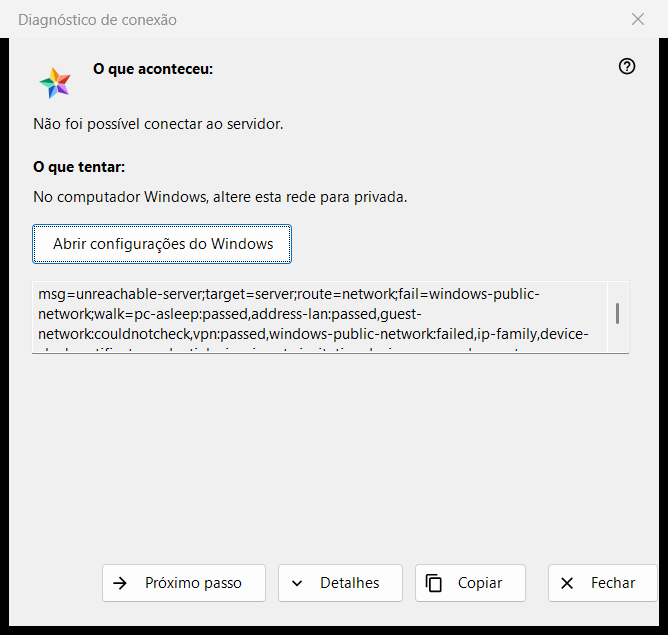
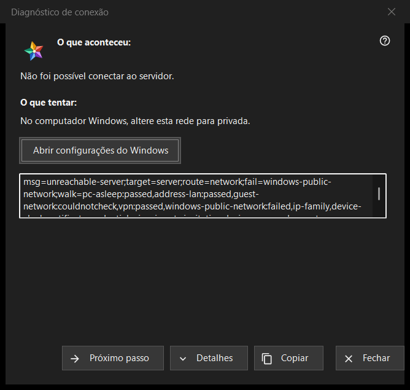

Diagnóstico de conexão
Finalidade
Explica por que um servidor ou um dispositivo não pode ser alcançado e oferece o que tentar, um passo de cada vez. Não altera nenhuma configuração do computador nem do Windows. A janela se abre em «Por que não conecta?..» no menu «Mais» da lista de recursos (para uma linha selecionada), a partir de uma entrada de servidor em «Os meus dispositivos» que está entrando de novo, mostra um certificado alterado ou não consegue conectar, e sozinho quando a abertura de um recurso falha.


Nesta ordem
- Leia «O que aconteceu:».
- Tente o que diz «O que tentar:».
- Se essa não for a causa, pressione «Próximo passo».
- Pressione «Detalhes» se alguém pedir os códigos e «Copiar» para entregá-los.
- Feche a janela.
Os elementos
O que aconteceu
Uma frase sobre a falha, por exemplo «Não foi possível conectar ao servidor.», «Usuário ou senha incorretos.» ou «Este servidor não coincide com o conectado anteriormente.». Segue o tipo de falha que abriu a janela.
O que tentar
A janela começa no primeiro passo que falhou na verificação, ou no primeiro passo quando nenhum falhou. Passos típicos: acordar o dispositivo que executa o servidor, conferir que os dois dispositivos estão na mesma rede, sair de um Wi-Fi de convidados, desligar um instante a VPN, definir a rede do Windows como privada, verificar o servidor a partir de outra rede, acertar a data e a hora, confirmar uma nova impressão digital, digitar de novo o usuário e a senha. O último passo diz que só o administrador do servidor pode resolver.
Próximo passo e Configurações do Windows
«Próximo passo» avança pelos passos e desaparece no último. Para os dois passos que as configurações do Windows podem resolver, o perfil de rede e o relógio, um botão «Abrir configurações do Windows» abre a página correspondente do Windows; o programa não altera nada sozinho.
Detalhes e Copiar
«Detalhes» mostra ou oculta uma caixa somente leitura com os códigos do diagnóstico: o tipo de falha, o alvo, a rota, o passo que falhou e os passos percorridos. Nunca contém um endereço, um usuário, uma senha nem uma impressão digital. «Copiar» coloca essa linha na área de transferência e a janela diz «Códigos de diagnóstico copiados para a área de transferência.»
Como a verificação funciona
A verificação roda só para a conexão que você tentou e apenas lê: tenta alcançar o host e a porta e examina o estado da rede, os adaptadores VPN, o perfil de rede do Windows, a família de endereços, o relógio e o certificado. Para no primeiro passo que falha, e uma verificação que não pôde ser feita nunca conta como aprovada nem como reprovada.